Route /gallery/
A polished space for art, edits, renders, and chaotic Scoofyx gifs.
The gallery now uses your real files. Click any image or gif to open it bigger in the lightbox.
Route /gallery/
The gallery now uses your real files. Click any image or gif to open it bigger in the lightbox.
Best fit
Fursona render
One of the strongest pieces for showing the fox-shark hybrid clearly.
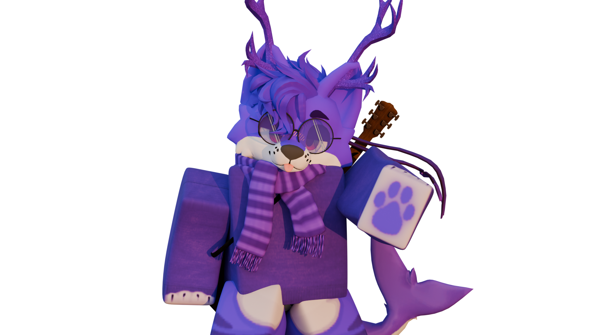
Alt design
This one feels magical and makes the design space feel bigger than one outfit.
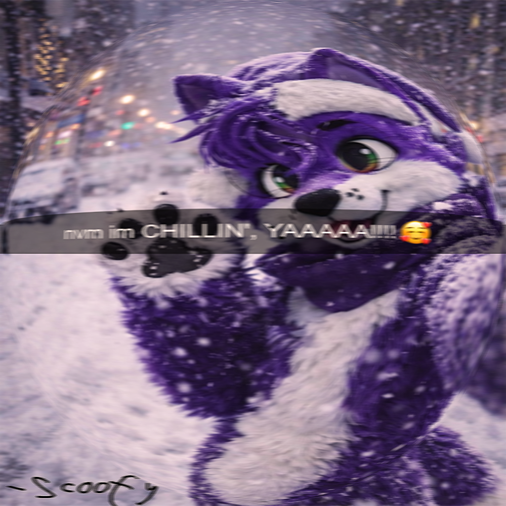
Scene art
Soft, playful, and really good for a moodboard kind of section.
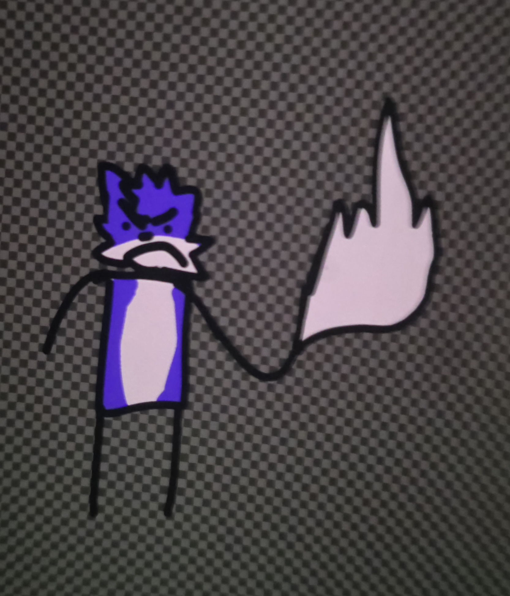
Drawing
Simple and iconic. Great for sticker energy and smaller profile visuals.
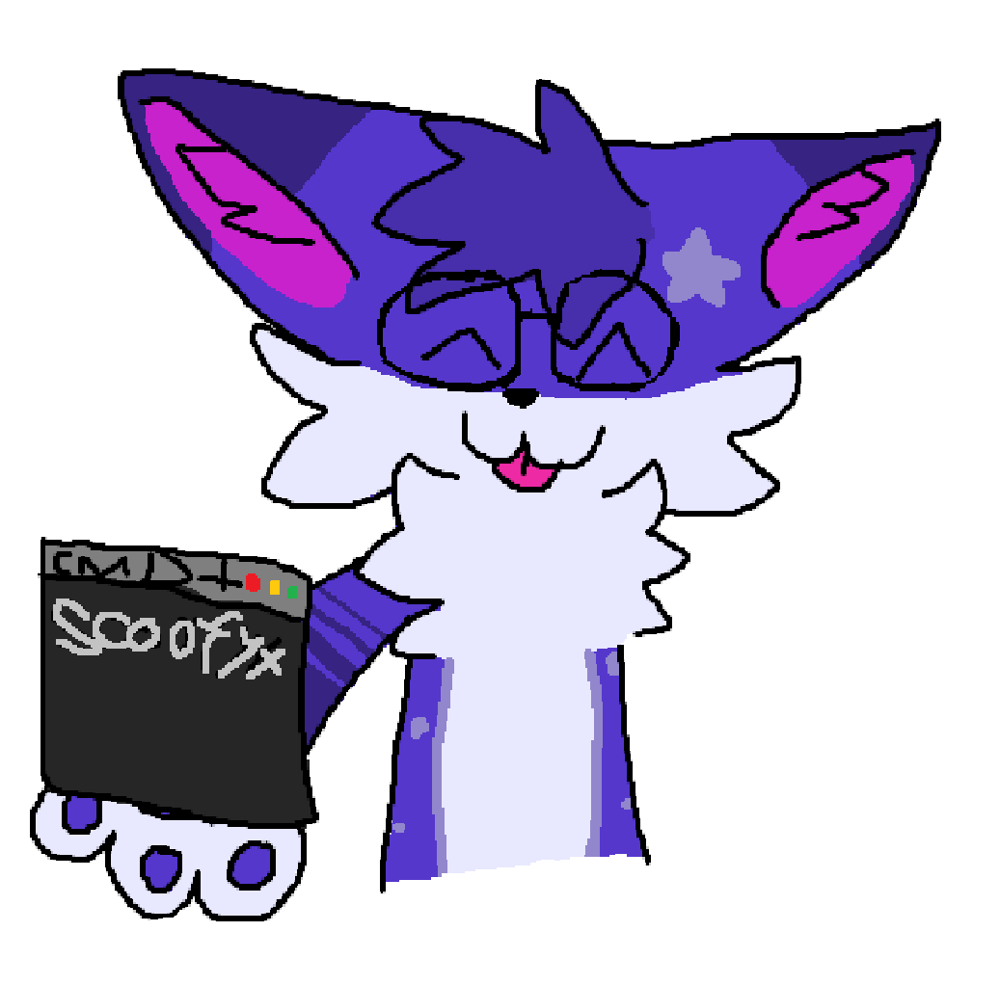
Old joke art
Important because it shows the humor side of your art history, not just the polished pieces.
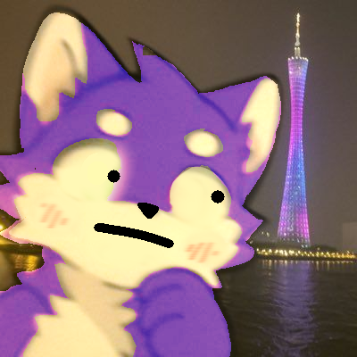
Joke drawing
This is peak weird internet joke energy and absolutely belongs here.
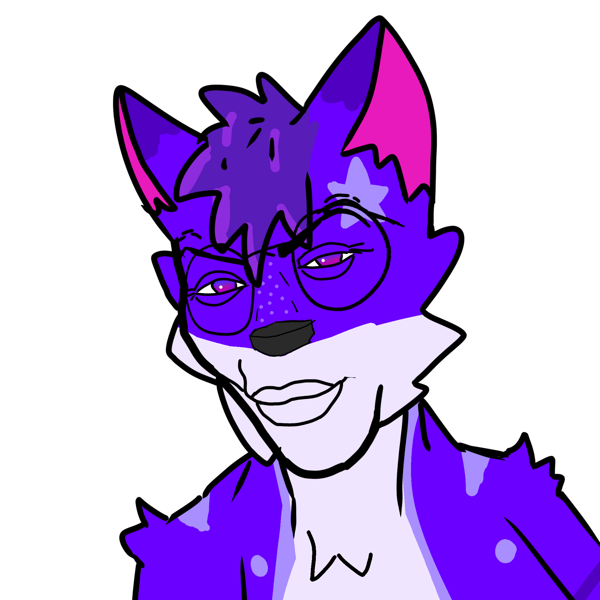
Older art
Older work adds history to the gallery and makes the character feel like it evolved over time.
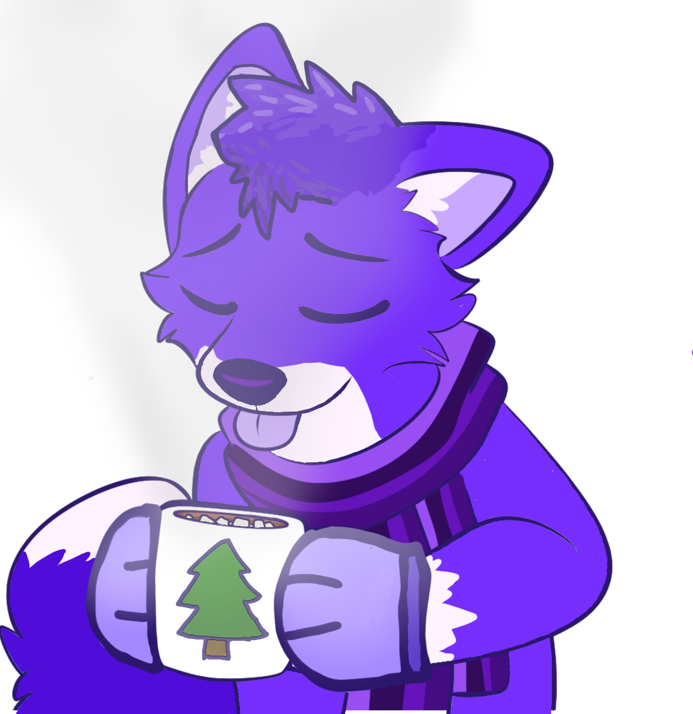
Style study
The linework here pushes the exaggerated meme-expression side of your style.
Blender scene
This brings in your other Blender furry character work and adds environmental art.
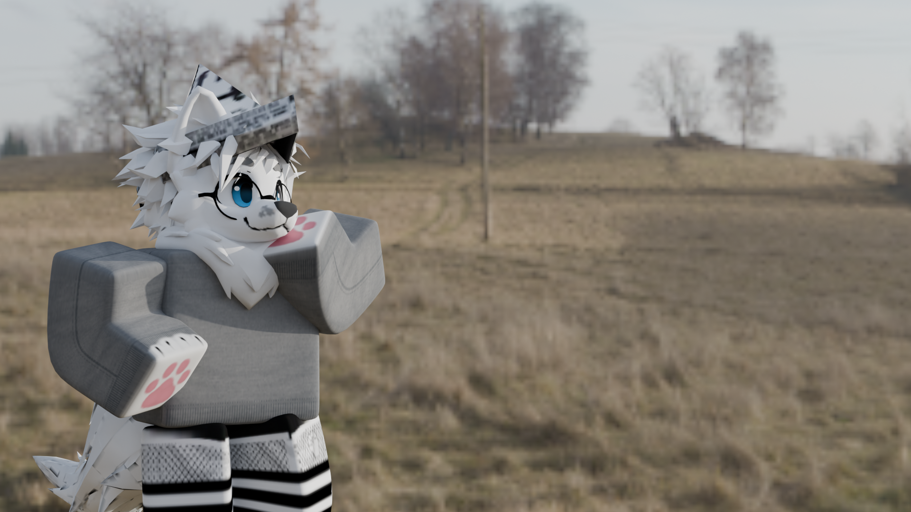
Meme art
Your gallery feels way more honest with joke edits and fandom memes mixed in.
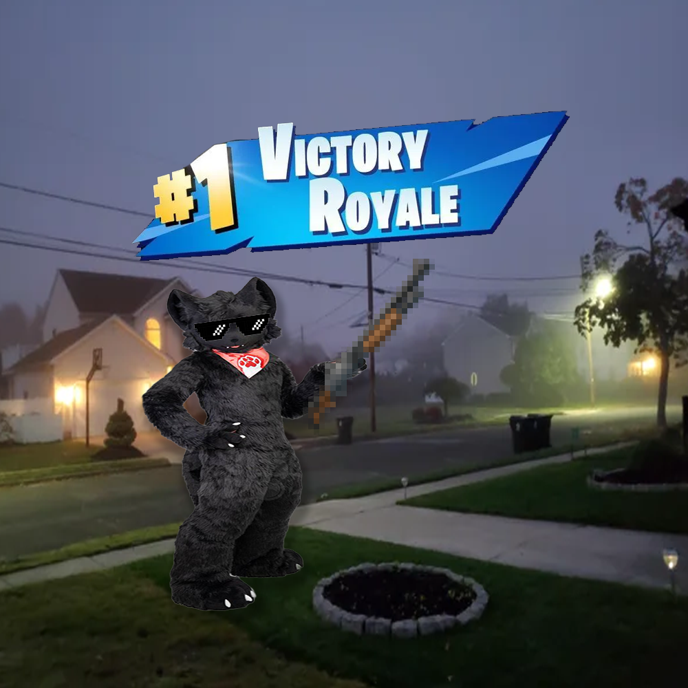
Liminal horror
This adds another side of your art brain and proves the site can hold eerie work too.
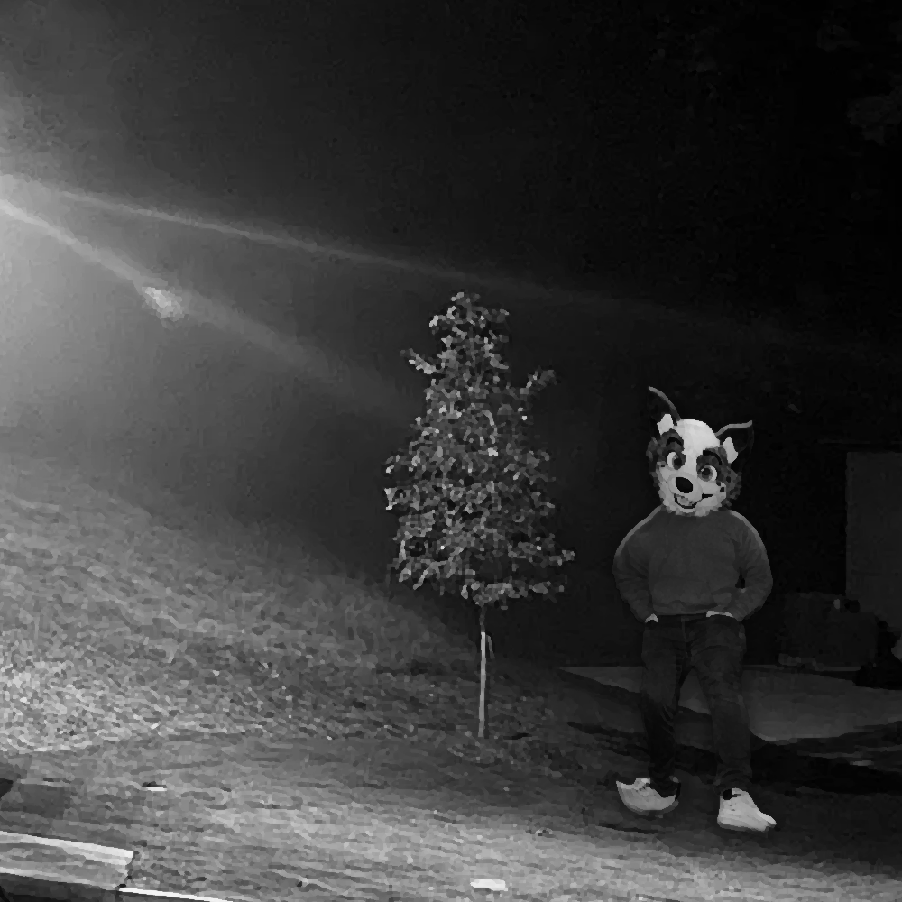
Mood art
A quieter piece like this helps the gallery breathe between the louder joke images.
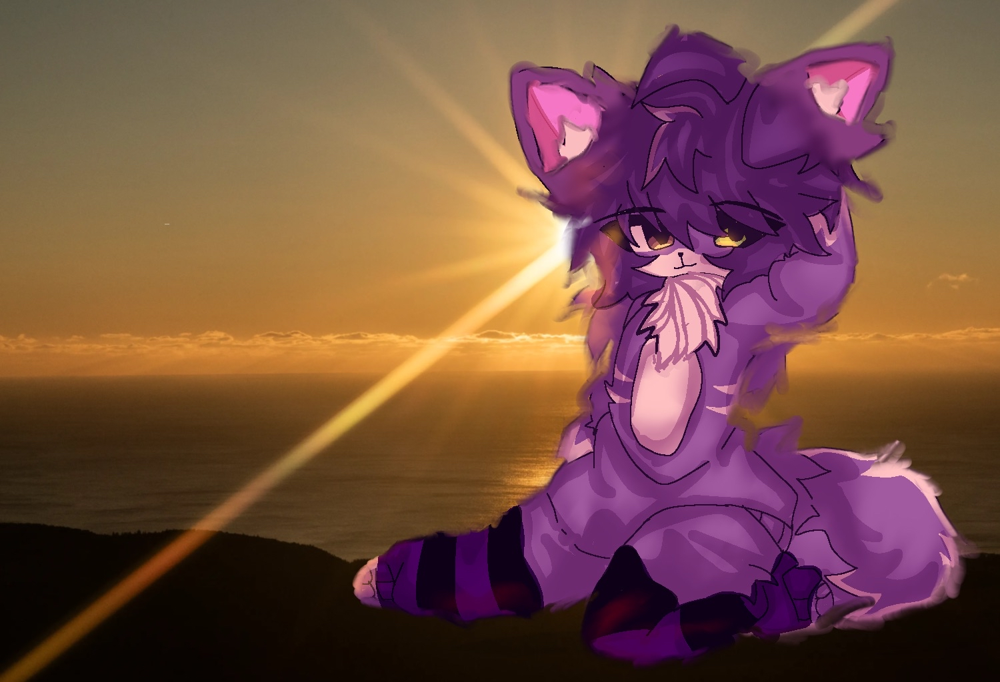
Gifverse
Good homepage sticker energy and a clean intro gif.
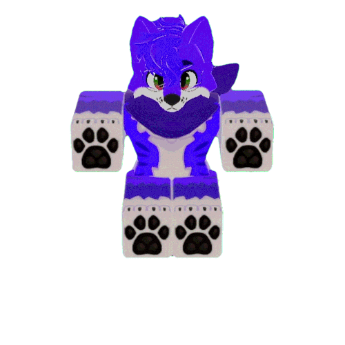
Gifverse
Exactly the kind of weird fun stuff that gives the site personality.

Meme energy
This is the kind of image that should absolutely exist on a Scoofyx site.

Gifverse
Another good example of old Roblox-fursona gifs still adding charm to the gallery.